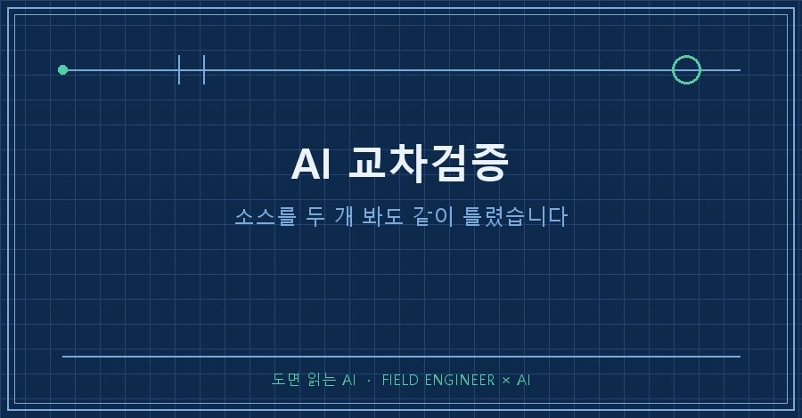
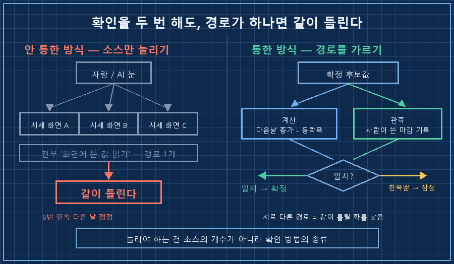
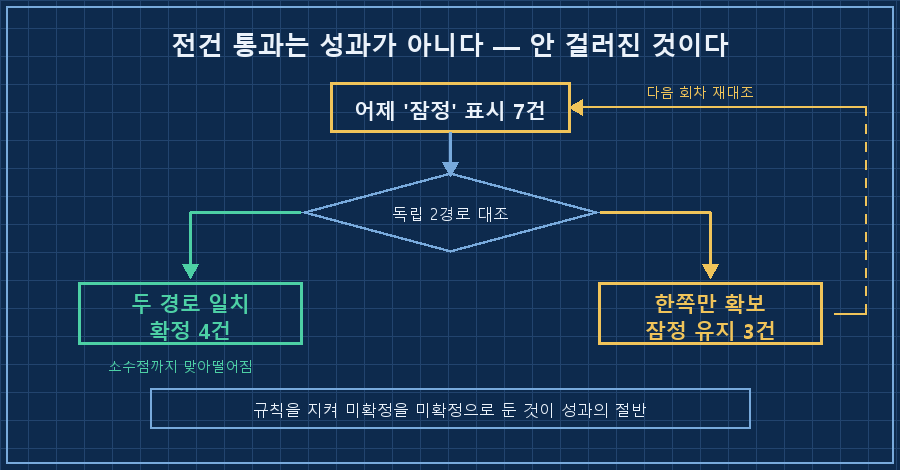

새벽에 AI가 만들어 둔 리포트 맨 아래에, 며칠 전부터 이런 각주가 붙어 나옵니다.
※ 이 값은 다음 거래일 역산 대조를 거치지 않았으므로 '잠정'입니다.
다음 리포트에서 재대조하여 필요 시 정정 보고합니다.그리고 다음 날 아침, 그 '잠정' 딱지가 붙어 있던 7건이 한꺼번에 정리됐어요. 4건은 확정으로 올라갔고, 3건은 잠정에 그대로 남았습니다.
AI 교차검증이 여섯 번이나 안 먹혔던 건 소스가 부실해서가 아니었어요. 사이트를 두 개 보든 세 개 보든 전부 "화면에 뜬 값을 눈으로 읽는다"는 같은 경로였거든요. 같은 방식으로 두 번 확인하면 틀릴 때도 같이 틀립니다. 통한 방법은 경로를 갈라놓는 거였어요. 하나는 계산으로 되짚고, 하나는 사람이 정리해 쓴 마감 기록으로 확인하고. 둘이 맞아떨어질 때만 확정으로 올립니다.
2026년 9월 기준 기록이고요. 개인용 자동 리포트를 굴리면서 겪은 얘기지 종목이나 투자 판단에 대한 조언은 아닙니다. 다만 AI한테 매일 숫자를 물어오게 시키고 계시다면, 그게 시세든 재고든 실적이든 똑같이 걸리는 함정이에요.
소스를 늘렸는데 왜 계속 틀렸을까요
한 소스만 믿으니까 틀린 거라고 생각했어요. 그래서 소스를 늘렸고, 그래도 틀렸습니다. 제가 AI 교차검증이라고 부르던 건 사실 검증이 아니라 복사본 확인이었던 거죠..
제조 쪽에서 제어랑 계측 일을 15년쯤 했는데, 이 바닥엔 오래된 규칙이 하나 있어요. 어떤 값이 의심스러우면 같은 종류의 계기를 하나 더 붙이지 않습니다. 두 대가 같은 원리로 재면 같은 이유로 같이 틀리거든요. 원리가 다른 방법으로 한 번 더 재야 그게 대조입니다. 제가 이걸 현장에서는 그렇게 따지면서, 정작 AI가 물어온 숫자에는 안 하고 있었어요..
AI한테 시킨 건 "여러 군데서 확인해라"였는데, AI가 할 수 있는 게 화면 읽기밖에 없으면 여러 군데가 다 한 군데인 셈입니다.
실패 목록을 날짜순으로 세어보니 여섯 번이었어요.
8/29 하루 만에 24%p 반전
8/31 같은 시점인데 31%p 격차
9/1 같은 날 세 소스가 6%p 격차
9/2 같은 도구가 8%p 격차
9/3 이미 마감된 확정값이 소스별로 6.69포인트 차이
9/4 대책을 넣었는데도 5건 재정정
여섯 번의 대책은 뭐가 달랐나
되짚어보니 앞의 다섯 개 대책은 전부 소스 품질을 손보는 방향이었어요. 더 믿을 만한 데를 찾고, 순위를 매기고, 우선순위표를 만들고. 여섯 번째만 방향이 달랐습니다. 소스를 안 건드리고 확인하는 방법 자체를 두 종류로 나눴어요.
| 구분 | 안 통한 대책(5회) | 통한 대책(1회) |
|---|---|---|
| 손 댄 곳 | 어디서 가져오나 | 어떻게 확인하나 |
| 검증 방식 | 값 ↔ 값 비교 | 계산값 ↔ 관측 기록 |
| 두 확인의 관계 | 같은 경로 | 서로 독립 |
| 같이 틀릴 확률 | 높음 | 낮음 |
| 결과 | 다음 날 또 정정 | 4건 확정 / 3건 잠정 |
기록에 남긴 문장은 이랬습니다.
결정적 차이는 소스 품질이 아니라 검증의 독립성.
역산(계산)과 마감 기사(관측)는 서로 다른 경로라
우연히 일치할 확률이 낮다.규칙 자체는 한 줄이에요.
다음 거래일 종가에서 등락폭을 빼서 역산한 값과
마감 기록이 일치할 때만 '확정'으로 인정한다.성과의 절반은 확정 못 한 3건이었어요
7건 중 4건만 확정으로 올라갔습니다. 나머지 3건은 둘 중 한쪽만 확보돼서 규칙대로 잠정에 남겼어요.
처음엔 이게 미완성으로 보였는데, 다시 보니 오히려 이쪽이 증거였습니다. 규칙이 진짜로 돌아가고 있으면 통과 못 하는 건이 반드시 나와야 하거든요. 7건이 전부 통과했으면 그건 규칙이 좋은 게 아니라 규칙이 아무것도 안 걸러낸 겁니다. 지난 사흘은 전부 "확정"이라고 적었다가 다음 날 뒤집혔어요. 확정과 잠정을 나눠 적기 시작한 게 이날이 처음입니다.
한 가지 더 봤어요. 정정된 7건의 방향을 세어보니 3건은 실제가 더 나빴고 4건은 더 좋았습니다. 한쪽으로 안 쏠렸다는 뜻이고, 이건 수집 방식이 어느 방향으로 편향돼 있진 않다는 확인이에요. 정정 보고를 유리한 것만 골라 실었으면 이 확인 자체가 불가능했겠죠.
여러분이 AI한테 받은 검증 결과는 마지막으로 언제 "확인 못 했음"을 뱉었나요? 전부 통과로 돌아온다면 그건 통과가 아니라 안 거른 것일 수도 있어요.

규칙을 만든 다음 날, 뭘 확인해야 할까요
솔직히 이번에 제일 크게 배운 건 규칙 내용이 아니에요. 규칙을 만든 다음 날 그 규칙이 실제로 일했는지 보러 가는 단계가 따로 있다는 겁니다.
저는 그동안 대책을 만들면 거기서 끝냈어요. 문서에 적었으니 됐다고요. 그런데 앞의 다섯 개는 적혀 있는 상태로 다음 날 그냥 깨졌습니다. 적힌 것과 도는 것은 다른 얘기죠.
작동을 확인하는 방법은 의외로 간단했어요. 확신 없는 항목에 잠정 딱지를 붙여서 목록으로 남겨두는 겁니다. 다음 날 그 목록이 그대로 있으면 규칙이 안 돈 거고, 목록이 줄어들었으면 돈 거예요. 기록엔 이렇게 적어뒀습니다.
확신 없는 것을 목록으로 남기는 습관이 규칙보다 먼저 일합니다.그리고 규칙 하나를 같이 걸었어요. "내일은 정정 0건 예정" 같은 무오류 선언을 금지하는 것. 앞으로 몇 건이 틀릴지는 아무도 모르는데, 그걸 미리 선언하면 다음 날 틀린 걸 찾을 이유가 사라지더라고요.
남은 3건 중 하나는 그날 안에 풀렸습니다. 시세 화면 여러 개를 뒤지는 대신 그 지표를 발행하는 곳의 공식 페이지를 직접 열었더니 한 번에 끝났어요. 여섯 번을 헤매고 나서야 원본 문을 두드린 셈입니다.. 소스를 늘리는 게 답이 아니라 원본에 가까이 가는 게 답인 경우도 있더라고요!
자주 묻는 질문
Q. 소스를 세 개, 네 개로 늘리면 결국 다수결로 맞출 수 있지 않나요?
세 개가 서로 다른 방법으로 확인한 거면 됩니다. 그런데 셋 다 같은 화면을 읽은 값이면 다수결이 아니라 같은 답을 세 번 본 거예요. AI 교차검증에서 늘려야 하는 건 개수가 아니라 종류입니다. 늘리기 전에 "이 셋의 경로가 서로 다른가"를 먼저 보셔야 해요.
Q. 경로가 다르다는 걸 어떻게 판단하나요?
저는 이렇게 나눕니다. 계산해서 나오는 값(역산·합계·차분)과 사람이 관측해 적어둔 기록(정리 기사·공식 발표·현장 대장). 이 둘은 한쪽이 틀려도 다른 쪽이 따라 틀릴 이유가 없어요. 같은 API를 두 번 부르는 건 경로 하나입니다.
Q. 그럼 확정 못 한 항목은 리포트에서 빼는 게 낫나요?
빼면 안 됩니다. 빼는 순간 그게 검증됐는지 아닌지를 다시는 알 수 없게 돼요. 잠정이라고 적어서 실어두고, 다음 회차에 재대조 결과를 반드시 붙이는 쪽이 낫습니다. 저는 이 잠정 목록 덕분에 7건을 다시 잡았어요.
여섯 번을 틀리는 동안 저는 매번 더 좋은 소스를 찾으러 갔습니다. 정작 바꿔야 했던 건 확인하는 방법이 몇 종류냐였고요. 다음 편에서는 이 잠정 목록이 며칠씩 안 줄어들 때 판정 기한을 어떻게 거는지 적어보겠습니다!
깨진 규칙과 살아남은 규칙을 날짜별로 나란히 붙여 makefield.ai에 정리해 두고 있습니다.
태그: #AI교차검증 #AI검증규칙 #AI숫자검증 #AI데이터신뢰 #AI팩트체크 #AI결과물검수 #AI할루시네이션 #AI에게일시키기 #AI자동화구축 #AI리포트 #AI데이터수집 #AI기록관리 #AI활용법 #개인AI에이전트 #도면읽는AI